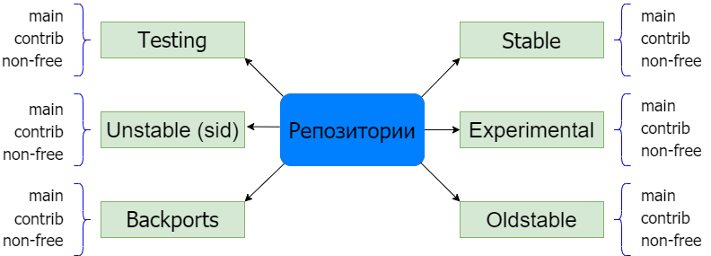
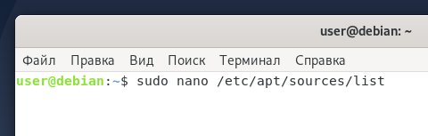
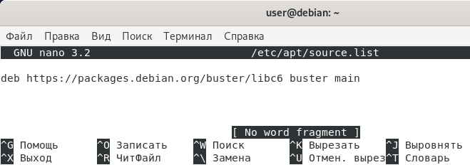
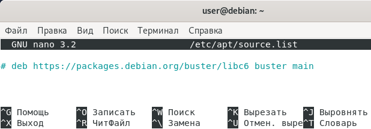

Устанавливайте репозитории в Debian легко и быстро. В статье мы расскажем, что такое репозитории, какие они бывают, а также, как происходит настройка репозиториев в Debian.
Все программы в Linux распространяются в виде пакетов ― набора программ, упакованных в специальный формат. Пакеты можно скачать из репозиториев. Репозитории ― это хранилища в Интернете, в которых находятся файлы пакетов приложений Linux. Практически у каждого дистрибутива Linux есть свой репозиторий, который содержит проверенные и стабильные версии программ.
Пакеты можно установить на Linux одним из двух способов: через инструменты с графическим интерфейсом (менеджеры файлов) или через командную строку (терминал). Подключение репозиториев в Debian происходит через терминал. С его помощью вы вводите команду — обращаетесь к репозиторию, и программа устанавливается.
Для работы с программным обеспечением на Debian надо знать псевдонимы версий Debian, официальные репозитории, а также виды веток программных пакетов. Сначала рассмотрим основные репозитории и разделы в Debian.
Существует официальный список репозиториев Дебиан. Расскажем про каждый из них подробнее.

Stable
В этом репозитории находятся самые актуальные и стабильные версии программ, именно их рекомендуется использовать. Программы, которые оказались в этом репозитории, прошли много проверок и доработок, чтобы стать надежным ПО. Часто в этом репозитории публикуют не самые свежие версии, зато самые надежные. Он формируется из ветки Testing после тщательной доработки.
Testing
В репозитории Testing находятся разработанные программы, которые ещё не прошли много тестов, чтобы перейти в ветку Stable. Пакеты в Testing попадают из репозитория Unstable. Использовать программы из репозитория Testing следует, только чтобы ознакомиться с возможностями нового релиза программы, так как они могут иметь ошибки при использовании.
Unstable (sid)
Sid ― это репозиторий с самым свежим программным обеспечением. Если в репозитории Testing ошибок может совсем не быть, так как до этого программа уже прошла большой путь проверок, то здесь ПО только начало свой путь. Использовать программы из этого репозитория не рекомендуется. Также Unstable может нарушить зависимости пакетов, так что потом вернуться на Stable будет трудно.
Oldstable
Oldstable — кодовое имя предыдущего Stable репозитория. При публикации новой версии Stable, предыдущая переходит в ветку Oldstable. Для этого репозитория ещё продолжают выпускаться обновления безопасности.
Experimental
Experimental репозиторий содержит пакеты и утилиты, которые только разрабатываются и находятся в состоянии начальной версии. Он предназначен для разработчиков и тестировщиков.
Backports
Backports ― компромисс между Stable-веткой и набором программ Testing. Он содержит преимущественно пакеты из Testing и немного из Unstable. Пакеты из Backports, где это возможно, устанавливаются без новых библиотек. Это сделано для того, чтобы при необходимости можно было вернуться на Stable. Если вам нужно ПО из веток Testing и Unstable, то лучше использовать этот репозиторий.
В Debian каждый репозиторий состоит из нескольких веток (разделов):
Пакеты в каждой из веток (main, contrib и non-free) полностью готовы к работе с дистрибутивом Debian. Также для добавления репозитория вам понадобятся названия псевдонимов версий Debian.
Все версии (релизы) Debian имеют псевдонимы. Каждая версия названа в честь одного из героев мультфильма «История игрушек»:
Знание релизов понадобится при добавлении репозитория.
Операционная система хранит адреса всех репозиториев в специальном файле sources.list, который расположен в каталоге /etc/apt. Чтобы подключить репозиторий, нужно добавить в sources.list адрес web-сервера репозитория.
Как подключить репозиторий Debian:
1. Откройте терминал сочетанием клавиш Ctrl+Alt+T.
2. Отредактируйте файл /etc/apt/sources.list. Введите в терминал:
sudo nano /etc/apt/sources.list

3. В конец файла вставьте команду с адресом репозитория:
Где:
Пример. Чтобы скачать программу MariaDB для Debian 10, надо ввести:
deb https://packages.debian.org/buster/libc6 buster main
4. Сохраните и закройте файл сочетанием клавиш Ctrl+O и Ctrl+X
5. Обновите пакеты:
sudo apt-get update
Готово, установка репозиториев в Debian прошла успешно.
Удаление репозиториев в Debian можно провести двумя способами.
1. Откройте терминал сочетанием клавиш Ctrl+Alt+T.
2. Откройте файл /etc/apt/sources.list. Введите в терминал:
sudo nano /etc/apt/sources.list
3. Найдите запись с репозиторием и удалите её:

Способ 2. Комментирование строки
1. Откройте терминал сочетанием клавиш Ctrl+Alt+T.
2. Откройте файл /etc/apt/sources.list. Введите в терминал:
sudo nano /etc/apt/sources.list
3. Найдите запись с репозиторием и закомментируйте строку символом # в начале строки:

Готово, вы удалили репозиторий в Debian.